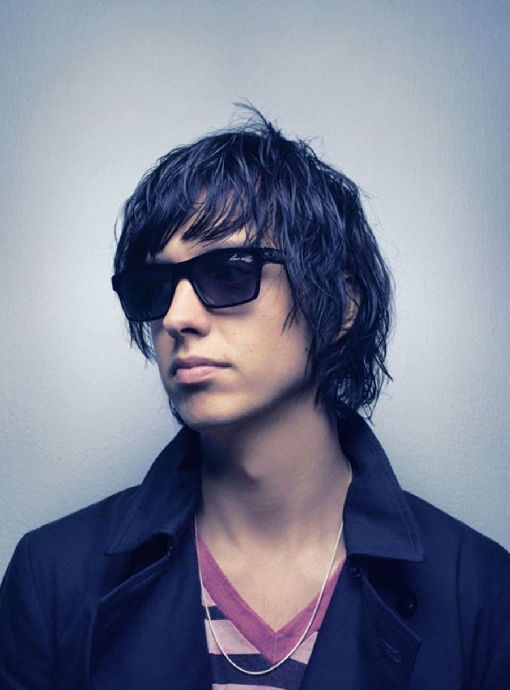
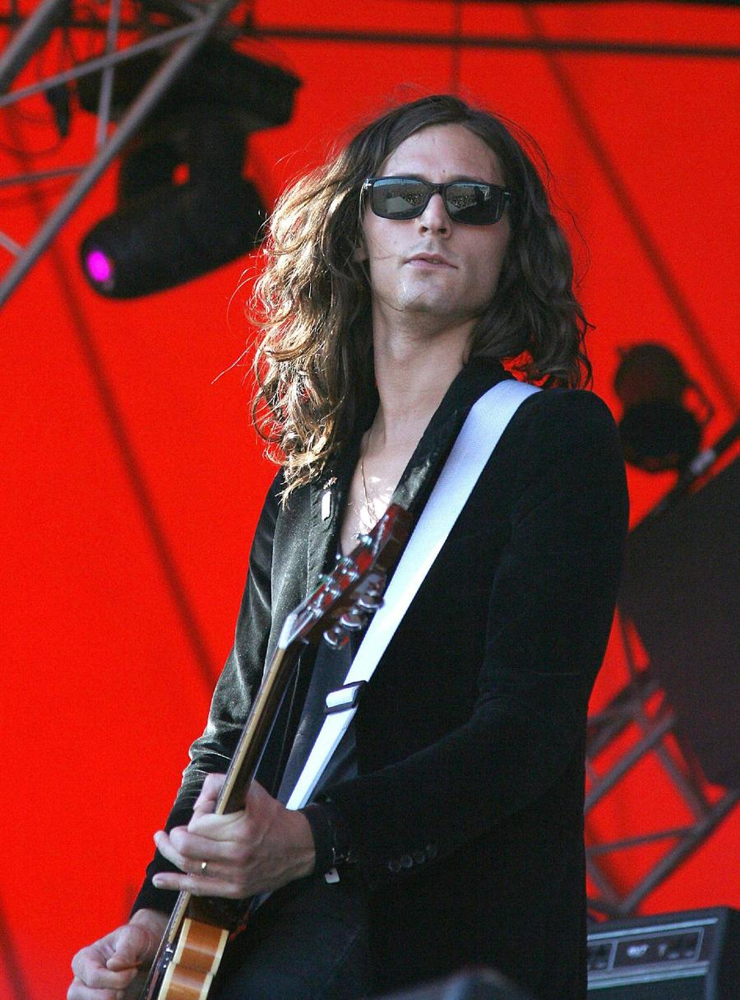
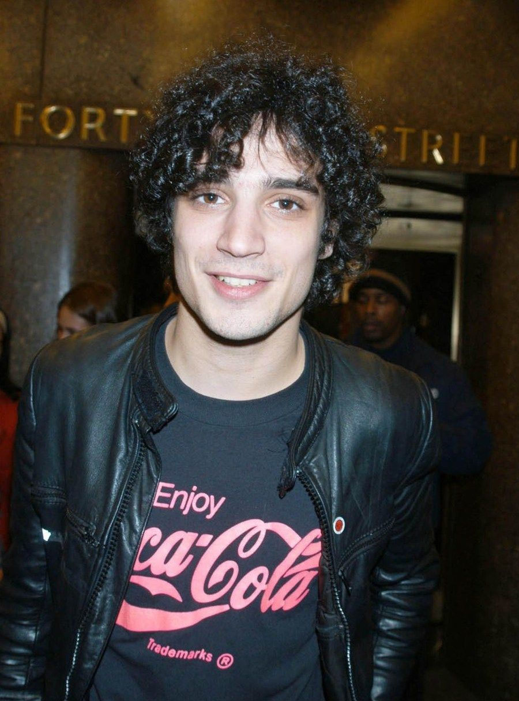
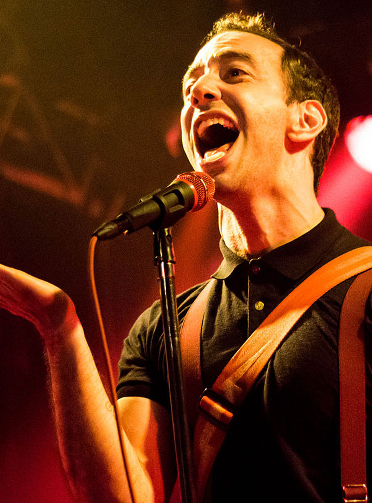

Here is some short paragraph text
| Artist | Biography | |
|---|---|---|
| Julian Fernando Casablancas | Julian Fernando Casablancas (born August 23, 1978) is an American musician, singer, songwriter and record producer. He is best known as the lead singer of the American rock bands The Strokes founded in 1998 and The Voidz, which was founded in 2013. Casablancas has also led a solo career during the Strokes' hiatus, releasing the album Phrazes for the Young on November 3, 2009. Over the years, Casablancas has also collaborated with several other artists on their work, examples being The Lonely Island's 2009 album Incredibad and Daft Punk's 2013 album Random Access Memories. Casablancas founded the independent record label Cult Records in 2009. Initially used as an imprint for Casablancas' solo releases, Cult later became a standalone label, and in June 2014 entered a label services agreement with Kobalt. |
 |
| Nicholas Valensi | Nicholas Valensi (born January 16, 1981) is an American guitarist, singer, songwriter and session musician. He is most famous for his role as lead and rhythm guitarist, as well as occasional backing vocalist and mellotron player, in the American rock band The Strokes. Valensi has also worked as a songwriter and session guitarist with various artists, including Sia, Blondie, Brody Dalle, Regina Spektor and Kate Pierson. In 2013, he founded side-project CRX, for which he acts as singer, songwriter and lead and rhythm guitarist. Their debut album, New Skin, was released on October 28, 2016. |  |
| Nikolai Philippe Fraiture | Nikolai Philippe Fraiture (born November 13, 1978 in New York City, United States) is the bassist for The Strokes. | |
| Fabrizio Moretti | Fabrizio Moretti (born June 2, 1980) is a Brazilian-Italian musician and visual artist best known as the drummer for American indie rock band The Strokes. He is also a member of Brazilian/American rock supergroup Little Joy. Moretti has also worked on various art projects since 2012. |  |
| Albert Louis Hammond Jr. | Albert Louis Hammond Jr. (né Hammond III; born April 9, 1980) is an American guitarist, singer, songwriter and music producer. He is most famous for his role as rhythm and lead guitarist, as well as occasional keyboard player and backing vocalist, in the American rock band The Strokes. He is the son of singer-songwriter Albert Hammond. Hammond Jr. released his debut album Yours To Keep in 2006 and followed up with ¿Cómo Te Llama? in 2008, an EP, AHJ, in 2013, and a third album, Momentary Masters, released in 2015. He released his fourth solo album, Francis Trouble, through Red Bull Records on March 9, 2018. |  |